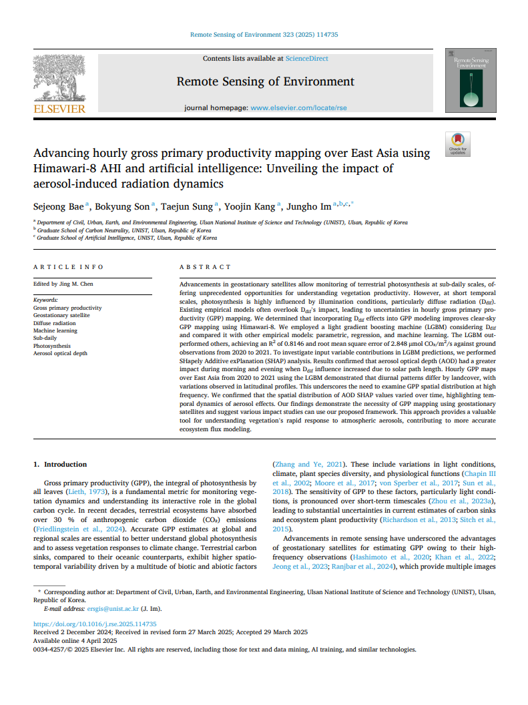
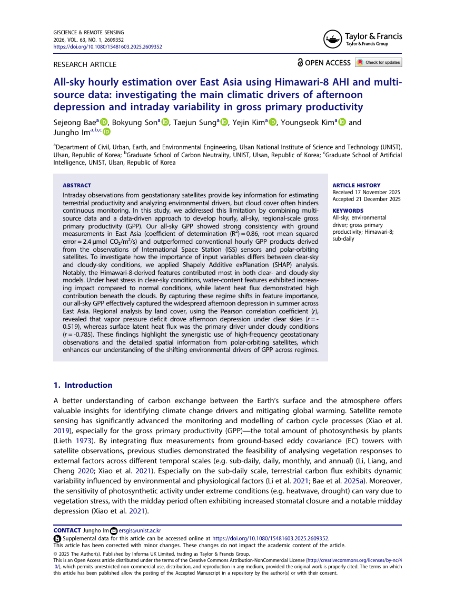
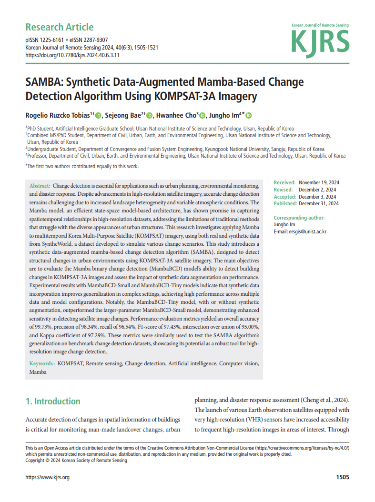
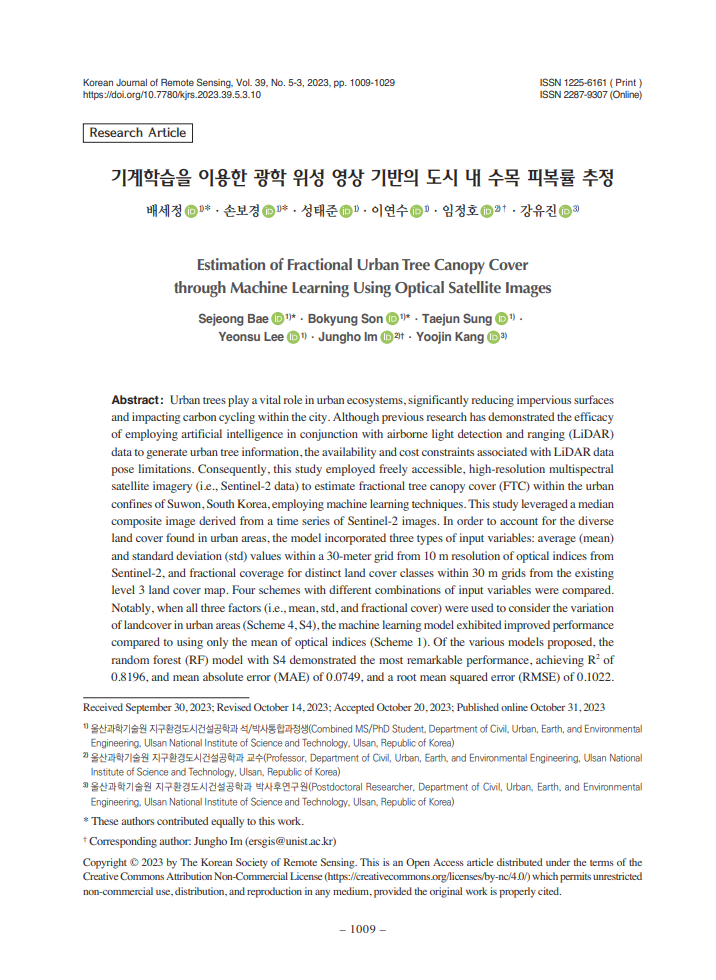
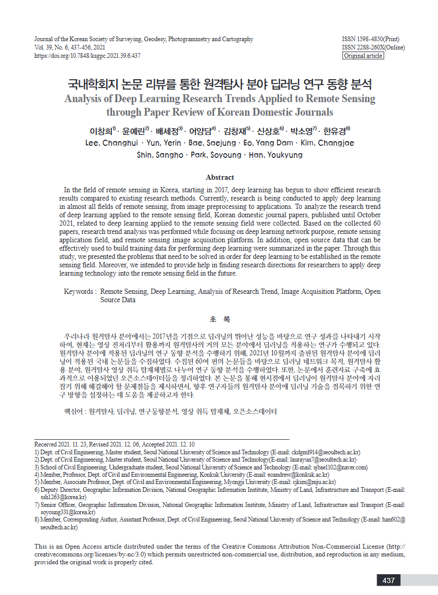

Publications
In progress publications
- 1. Bae, S., & Im, J. (2026). Evaluating Integration Strategies of Multimodal Geospatial Foundation Model for Landslide Semantic Segmentation. IEEE Transactions on Geoscience and Remote Sensing. Under review
- 2. Bae, S., Chung, I., Lee, G., Kim, Y., Im, J., Kim, Y., Choi, H., Hwang, S., Lee, G., & Yun, S. (2026). Process-guided global-to-regional transfer learning for hourly gross primary productivity mapping with geostationary satellite observations. Remote Sensing of Environment. Under review
- 3. Bae, S., & Im, J. (2026). Contrasting diurnal pathways shape ENSO-driven land carbon uptake. Science Advances. Under review
International Journal Articles
-
An Adaptive Dynamic AI-driven ParameTerization (ADAPT) framework for global hourly gross primary productivity estimation.ISPRS Journal of Photogrammetry and Remote Sensing, 242, 648–664. [Dataset]2026
-
HELIOS-Net: Hourly daytime estimation of land surface temperature with integration of observational solar-cloud-satellite geometry and deep neural network.ISPRS Journal of Photogrammetry and Remote Sensing, 242, 760–777.2026
-

IF11.4 (2025) • JCR 2.4%UNIQUE: UNified, high-resolution Intelligent carbon QUantification and Explanation.Remote Sensing of Environment, 346, 115636.2026 -

IF6.9 • JCR 10.0%All-sky hourly estimation over East Asia using Himawari-8 AHI and multi-source data: investigating the main climatic drivers of afternoon depression and intraday variability in gross primary productivity.GIScience & Remote Sensing, 63(1), 2609352.2026 -
IF11.4 (2025) • JCR 2.4%Advancing hourly gross primary productivity mapping over East Asia using Himawari-8 AHI and artificial intelligence: Unveiling the impact of aerosol-induced radiation dynamics.Remote Sensing of Environment, 323, 114735.2025
Domestic Journal Articles
-

SAMBA: Synthetic Data-Augmented Mamba-Based Change Detection Algorithm Using KOMPSAT-3A Imagery.Korean Journal of Remote Sensing, 40(6_3), 1505-1521.2024 -

Estimation of Fractional Urban Tree Canopy Cover through Machine Learning Using Optical Satellite Images. 기계학습을 이용한 광학 위성 영상 기반의 도시 내 수목 피복률 추정.Korean Journal of Remote Sensing, 39(5), 1009-1029.2023 -

Analysis of deep learning research trends applied to remote sensing through paper review of Korean domestic journals. 국내학회지 논문 리뷰를 통한 원격탐사 분야 딥러닝 연구 동향 분석.Journal of the Korean Society of Surveying, Geodesy, Photogrammetry and Cartography, 39(6), 437-456.2021